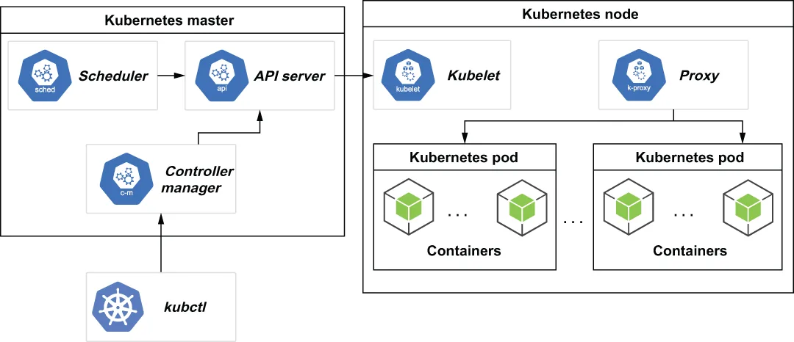

A cluster is the foundational base for running your containerized applications. In Kubernetes, a cluster consists of at least one cluster master and multiple worker machines, called nodes, as shown in figure A.1. The cluster master machine hosts the Kubernetes control plane, which performs all the administrative functions for the cluster, while the nodes are the machines that will host the containers themselves.
集群是运行你那些容器化应用的基础底座。在 Kubernetes 中，一个集群由至少一个集群主节点（cluster master）和多台被称为节点（node）的工作机器构成，如图 A.1 所示。集群主节点那台机器托管着 Kubernetes 的控制平面，由它执行集群的全部管理职能；而各个节点则是那些将亲自托管容器的机器。

Figure A.1 The Kubernetes master node is used to control all of the Kubernetes nodes in the node pool. Each Kubernetes node can host multiple pods, which in turn can host one or more application containers.
图 A.1 Kubernetes 主节点被用来控制节点池中的所有 Kubernetes 节点。每个 Kubernetes 节点可以托管多个 pod，而每个 pod 又可以托管一个或多个应用容器。
The computing resources from all of the nodes are registered with the cluster master and form a resource pool from which all the containers draw. For instance, if your particular container is hosting a database application, and it requires 8 GB of RAM and four CPU cores, the cluster master would have to find a node with sufficient resources available to meet this request and run the container on it. These claimed resources would then also be subtracted from the resource pool to indicate that they are already committed to a container. Once the cluster resource pool is exhausted, no more containers can be hosted until more resources are available.
来自所有节点的计算资源都会被注册到集群主节点上，并形成一个供所有容器取用的资源池。举例来说，如果你那个特定容器托管着一个数据库应用，而它需要 8 GB 内存和四个 CPU 核，那么集群主节点就必须找到一台拥有足够可用资源来满足这个请求的节点，并把该容器跑在它上面。这些被认领的资源随后也会从资源池中被扣减掉，以表明它们已经被承诺给了某个容器。一旦集群资源池被耗尽，就无法再托管更多容器了，除非有更多资源可用。
With Kubernetes, resources can be easily added by adding more nodes to the cluster. This effectively allows you to scale your cluster up based on your needs in a seamless manner. This feature is so appealing that nearly all cloud vendors offer some sort of Kubernetes option for hosting your applications. In addition, there is a large open source implementation of Kubernetes, known as OpenShift, which allows you to host a Kubernetes cluster on your own physical hardware. While both of these options are good choices for production applications, they do impose a rather high barrier for local development. Most people don’t want to pay the cost of hosting a large Kubernetes cluster simply for development or testing purposes, which is why minikube is a popular option for developers. Pulsar was designed specifically to run in a containerized environment, such as Kubernetes, where you can easily increase or decrease the number of Pulsar broker containers and/or BookKeeper bookies based on your demand.
有了 Kubernetes，往集群里添加更多节点就能轻松地增加资源。这实际上让你能够以无缝的方式、依据自己的需求来把集群扩展上去。这个特性如此有吸引力，以至于几乎所有云厂商都提供某种 Kubernetes 选项，供你托管自己的应用。此外，还有一个大型的 Kubernetes 开源实现，名为 OpenShift，它让你能够在自己的物理硬件上托管一个 Kubernetes 集群。虽然这两种选项对生产应用来说都是不错的选择，但它们确实为本地开发设置了一道相当高的门槛。大多数人并不愿意仅仅为了开发或测试目的，就去承担托管一个大型 Kubernetes 集群的成本——这正是 minikube 成为开发者中流行选项的原因。Pulsar 是被专门设计来运行在诸如 Kubernetes 这样的容器化环境中的；在那里，你可以依据自己的需求轻松地增加或减少 Pulsar broker 容器和/或 BookKeeper bookie 的数量。